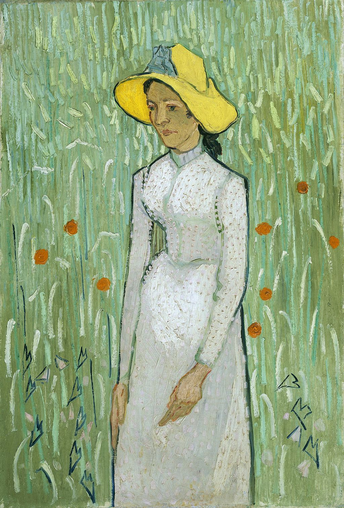

<head>
<meta charset="UTF-8" />
<meta name="keywords" content="drawing, painting" />
<meta name="description" content="drawings by Sunjy" />
<title>Sunjy</title>
<link rel="shortcut icon" type="image/x-icon" href="../../mImages/mCommon/favicon.ico" media="screen" />
<link rel="stylesheet" type="text/css" href="../../mCsses/mCommon/mCssA.css" />
<link rel="stylesheet" type="text/css" href="../../mCsses/mCommon/mCssB.css" />
<link rel="stylesheet" type="text/css" href="../../mCsses/mCommon/mCssC.css" />
<link rel="stylesheet" type="text/css" href="../../mCsses/mCommon/mCssD.css" />
<link rel="stylesheet" type="text/css" href="../../mCsses/mContent/mCssA.css" />
<link rel="stylesheet" type="text/css" href="../../mCsses/mContent/mCssB.css" />
<link rel="stylesheet" type="text/css" href="../../mCsses/mContent/mCssC.css" />
<link rel="stylesheet" type="text/css" href="../../mCsses/mContent/mCssD.css" />
</head>
<script type="text/javascript" src="../../mScripts/mContent/mContentAA.js" /></script>
<script type="text/javascript" src="../../mScripts/mContent/mContentAB.js" /></script>
<script type="text/javascript" src="../../mScripts/mContent/mContentAC.js" /></script>
<script type="text/javascript" src="../../mScripts/mContent/mContentAD.js" /></script>
<script type="text/javascript"></script> 
<script type="text/javascript">
document.write('<div class="mImgAbsolute"></div>');
/*
document.write('<p class="mFontSizeBColor" />From a white paper...</p>');
document.write('<table class="center"><tr><td>');
document.write('');
document.write('</td></tr></table>');
*/
</script>


<script type="text/javascript">
document.write('<p class="mFontSizeBColor" />Girl in White</p>');
document.write('<p class="mFontSizeSColor" />“Girl in White” by Vincent van Gogh depicts a young woman wearing a large yellow hat with a knot of sky-blue ribbons standing against a background of a green wheat field.<br><br>Vincent van Gogh created this painting in 1890 in Auvers-Sur-Oise, France, during the last months of his life. <br><br>Van Gogh has used the picture’s elongated plane to dramatic effect by having the woman fill most of the pictorial space, making her appear closer to the viewer.<br><br>Van Gogh shadowed her face and gave her a distant gaze, which endows her with a touching emotional distance.<br><br>In letters, Van Gogh admitted that he could only portray sadness and endless loneliness. This painting is one of Van Gogh’s soulful and beautiful paintings.<br><br>While in Auvers-Sur-Oise, from May until his death on July 29, Van Gogh made about 70 paintings, more than one painting a day, and many drawings.<br><br>Van Gogh painted the buildings and people around the town of Auvers, and the nearby fields.<br><br>Van Gogh made a second painting of the same woman with the same hat called “Young Peasant Woman with Straw Hat Sitting in the Wheat.”<br></p>');
document.write('<table class="center" /><tr><td>');
document.write('<br>Vincent van Gogh created this painting in 1890 in Auvers-Sur-Oise, France, during the last months of his life. <br><br>Van Gogh has used the picture’s elongated plane to dramatic effect by having the woman fill most of the pictorial space, making her appear closer to the viewer.<br><br>Van Gogh shadowed her face and gave her a distant gaze, which endows her with a touching emotional distance.<br><br>In letters, Van Gogh admitted that he could only portray sadness and endless loneliness. This painting is one of Van Gogh’s soulful and beautiful paintings.<br><br>While in Auvers-Sur-Oise, from May until his death on July 29, Van Gogh made about 70 paintings, more than one painting a day, and many drawings.<br><br>Van Gogh painted the buildings and people around the town of Auvers, and the nearby fields.<br><br>Van Gogh made a second painting of the same woman with the same hat called “Young Peasant Woman with Straw Hat Sitting in the Wheat.”<br>" />');
document.write('</td></tr></table>');
</script>


